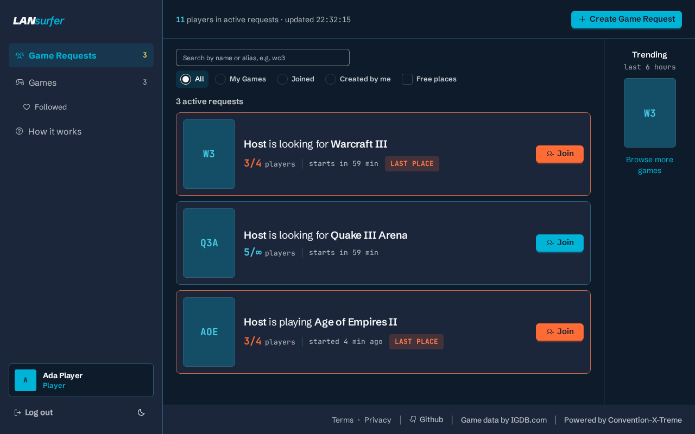
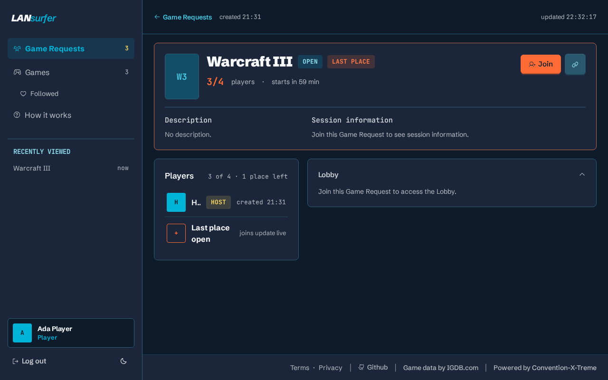

What is LANsurfer?
Maybe it's a quick round of Counter-Strike. Maybe it's FlatOut 2, an all-night OpenTTD session, or that obscure game you haven't launched in twenty years. Chances are, someone brought it too.
LANsurfer gives everyone at your event one shared place to see what others want to play, follow their favourite games, and get a group together. It started at CXT, a LAN party with around 400 participants, and is open source for LAN organizers and gaming communities everywhere.
How it works
Runs in any desktop or mobile browser. No app to install.
Follow your games
Pick the games you'd like to play and find them again with one filter.
Find players
Create a Game Request with a start time, an optional player limit, and a short description.
Play together
Browse requests, see who's still looking, and join in. Live updates keep player counts current.
A look inside


Built for your community
Your LAN, your instance
Host LANsurfer on your own infrastructure and maintain the games available at your event.
A place for the classics
Your game catalog holds the games your community actually plays, including the less obvious ones.
Easy to join in
Quick, readable Game Requests that work on desktop and mobile.
Built in the open
Free software under the AGPL-3.0. Players, organizers, designers and developers shape it together.
Self-host LANsurfer
Running a LAN party or a gaming community? Pick a release, download its Docker Compose and environment files, configure your domain and login provider, and start it. No Git clone, Go, Node.js or Python required. Caddy and Traefik examples are included.
Get involved
Have you organized a LAN? Spent half the evening trying to find a fourth player? We'd love your perspective. Help with design, development, documentation, bug reports, or testing at LAN events.